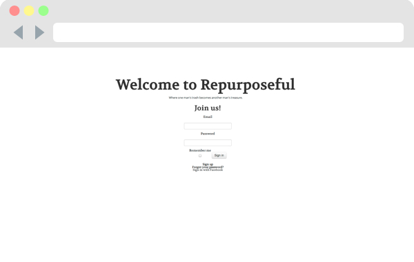

hi! i'm sarah.

Resume

Philosophy
have the courage to follow your heart and intuition.
they somehow already know what you truly want to become.
everything else is secondary. - steve paul jobs
Sarah was born in Chicago, Illinois but ever since she can remember, is a San Francisco native. After attending Choate Rosemary Hall in Wallingford, Connecticut, Sarah returned to California where she recently obtained a B.S. in Political Science from is the University of California, Berkeley.
After being bitten by the travel bug, Sarah participated in a study abroad program, “Semester at Sea”, traveling by sea to 11 countries (Dominica, Brazil, Ghana, South Africa, Mauritius, India, Singapore, Vietnam, Cambodia, China, Japan) over the course of four months. She continued to travel that year, spending four months in Bangkok, Thailand working full time for Groupon Thailand.
Now settled in the Bay Area, Sarah has chose to pursue web development through General Assembly’s Web Development Immersive (WDI) – a three month intensive front-end and back-end course – where she has grown into her skin as a full-stack web developer.
My Projects
The Vibe

Feel the vibe of anywhere in the world with the click of a button.
S+M (Sarah and Matt) Memory

Play a timed game of memory with 10 cards!
Repurposeful
Repurposeful, a resource-trading interface for industrial resources and you!
Work Flow